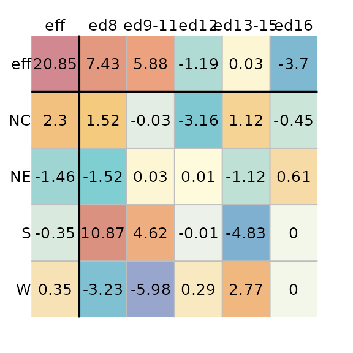
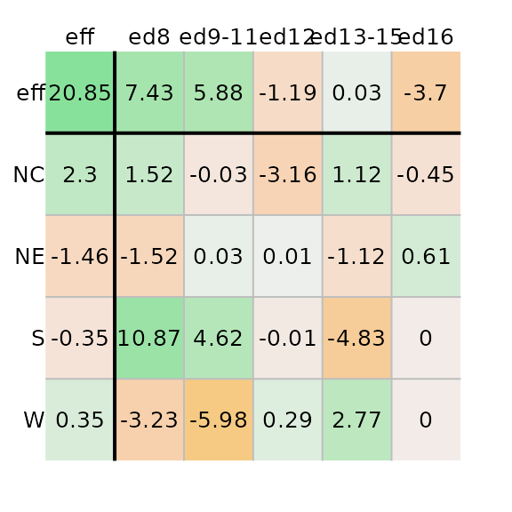

The median polish basics
The median polish is an exploratory technique used to extract effects from a two-way table. As such, a median polish can be thought of as a robust version of a two-way ANOVA–the goal being to characterize the role each factor has in contributing towards the expected value. It does so by iteratively extracting the effects associated with the row and column factors via medians.
For example, given a two-way table where 1964 through 1966 infant
mortality rates1 (reported as count per 1000 live births) is
computed for each combination of geographic region (NE,
NC, S, W) and each level of the
father’s educational attainment (ed8, ed9-11,
ed12, ed13-15, ed16), the median
polish will first extract the overall median value, then it will
smooth out the residual rates by first extracting the median
values along each column (thus contributing to the column factor), then
by smoothing out the remaining residual rates by extracting the
median values along each row (thus contributing to the row factor). The
smoothing operation is iterated until the residuals stabilize. An
example of the workflow is highlighted in the following figure.
The left-most table is the original data showing death rates. The second table shows the outcome of the first round of polishing (including the initial overall median value of 20.2). The third and forth table show the second and third iterations of the smoothing operations. Additional iterations are not deemed necessary given that little more can be extracted from the residuals. For a detailed step-by-step explanation of the workflow see here.
The resulting model is additive in the form of:
where is the response variable for row and column , is the overall typical value (hereafter referred to as the common value), is the row effect, is the column effect and is the residual or value left over after all effects are taken into account.
Each factor’s levels are displayed in the top row and left-most
column. In the above example, the region is assigned to the rows and the
father’s educational attainment is assigned to the columns. The father’s
educational attainment can explain about 11 units of
variability (7.58 - (-3.45)) in death rates vs
4 units of variability for the region (2.55 -
(-1.5)). As such, the father’s educational attainment is a
larger contributor to the expected infant mortality than the regional
effect.
Implementing the median polish
This package’s eda_polish is an augmented version of the
built-in medpolish available via the stats
package. A key difference is that eda_polish takes the
input dataset in long form as opposed to medpolish which
takes the dataset in the form of a matrix. For example, the infant
mortality dataset needs to consist of at least three columns: one for
each variable (the two factors and the expected value).
grd <- c("ed8", "ed9-11", "ed12", "ed13-15", "ed16")
dat <- data.frame(region = rep( c("NE", "NC", "S", "W"), each = 5),
edu = factor(rep( grd , 4), levels = grd),
perc = c(25.3, 25.3, 18.2, 18.3, 16.3, 32.1, 29, 18.8,
24.3, 19, 38.8, 31, 19.3, 15.7, 16.8, 25.4,
21.1, 20.3, 24, 17.5))
head(dat)
region edu perc
1 NE ed8 25.3
2 NE ed9-11 25.3
3 NE ed12 18.2
4 NE ed13-15 18.3
5 NE ed16 16.3
6 NC ed8 32.1The median polish can then be executed as follows:

The function will output the table as a plot along with a list of
components that are stored in the M1 object. If you want to
suppress the plot, you can set the parameter
plot = FALSE.
The M1 object is of class eda_polish. You
can extract the common values, and the row and column effects as
follows:
Ordering rows and columns by effect values
To order the row and column effects by effect values, set the
sort parameter to TRUE.
M1 <- eda_pol(dat, row = region, col = edu, val = perc, sort = TRUE)Applying a transformation to the data
You can have the function re-express the values prior to performing
the polish. For example, to log transform the data, pass the value
0 to p.
M1 <- eda_pol(dat, row = region, col = edu, val = perc, p = 0)If you are re-expressing the data using a negative power, you have
the choice of adopting a Tukey transformation
(tukey = TRUE) or a Box-Cox transformation
(tukey = FALSE). For example, to apply a power
transformation of -0.1 using a Box-Cox transformation, type:
M1 <- eda_pol(dat, row = region, col = edu, val = perc, p = -0.1, tukey = FALSE)Defining the statistic
By default, the polishing routine adopts the median statistic. You
can adopt any other statistic via the stat parameter. For
example, to apply a mean polish, type:
M1 <- eda_pol(dat, row = region, col = edu, val = perc, stat = mean)The eda_polish plot method
The list object created by the eda_pol function is of
class eda_polish. As such, there is a plot method created
for that class. The plot method will either output the original polished
table (type = "residuals"), the diagnostic plot
(type = "diagnostic"), or the CV values
(cv).
Plot the median polish table
You can generate the plot table from the median polish model as follows:
Adjusting color schemes
Excluding common effect from the color palette range
By default, the range of color palettes are defined by the range of
all values in the table–this includes the common effect value.
To prevent the common value from affecting the distribution of color
palettes, set col.com to FALSE.
plot(M1, col.com = FALSE)Note how the distribution of colors is maximized to help improve our view of the effects. This view makes it clear that the father’s educational attainment has a greater effect than the region.
Excluding row/column effects from the color palette range
If you want the plot to focus on the residuals by maximizing the
range of colors to fit the range of residual values, set
col.eff = FALSE.
plot(M1, col.eff = FALSE) 
Note that setting col.eff to FALSE does not
prevent the effects cells from being colored. It simply ensures that the
range of colors are maximized to match the full range of residual
values. Any effect value that falls within the residual range will be
assigned a color.
Changing color schemes
By default, the color scheme is symmetrical (divergent) and centered
on 0. It adopts R’s (version 4.1 and above) built-in
"RdYlBu" color palette. You can assign different built-in
color palettes via the colpal parameter.
You can list available colors in R via the hcl.pals()
function.
If you want to limit the output to divergent color palettes, type:
hcl.pals(type = "diverging")
[1] "Blue-Red" "Blue-Red 2" "Blue-Red 3" "Red-Green"
[5] "Purple-Green" "Purple-Brown" "Green-Brown" "Blue-Yellow 2"
[9] "Blue-Yellow 3" "Green-Orange" "Cyan-Magenta" "Tropic"
[13] "Broc" "Cork" "Vik" "Berlin"
[17] "Lisbon" "Tofino"For example, we can assign the "Green-Brown" color
palette as follows. (We’ll remove the common effect value from the range
of input values to maximize the displayed set of colors).
plot(M1, colpal = "Green-Brown", col.com = FALSE)The default color scheme is symmetrical and linear, centered on
0. If you want to maximize the use of colors, regardless of
the range of values, you can set col.quant to
TRUE which will adopt a quantile color scheme.
plot(M1, col.quant = TRUE)
You’ll note that regardless of the asymmetrical distribution of
values about 0, each cell is assigned a unique color
swatch.
When adopting a quantile color classification scheme, you might want to adopt a color palette that generates fewer unique hues and more variation in lightness values. For example,
plot(M1, col.quant = TRUE, colpal = "Green-Orange")
Adjusting text
You can omit all labeled values from the output by setting
res.txt to FALSE.
plot(M1, res.txt = FALSE)Likewise you can omit all axes labels by setting
label.txt to FALSE. This may prove useful when
applying a median polish to a large grid file.
plot(M1, res.txt = FALSE, label.txt = FALSE)You can adjust the text size via the res.size,
row.size and col.size parameters for the
numeric values, the row names, and the column names respectively. For
example, to set their sizes to 60% of their default value, type:
plot(M1, row.size = 0.6, col.size = 0.6 , res.size = 0.6)Exploring diagnostic plots
The plot method will also generate a plot of the
residuals vs comparison values (CV), herein referred to as the
diagnostic plot.
plot(M1, type = "diagnostic") $slope
cv
1.3688A bisquare robust line is fitted to the data (light red line) along with a robust loess fit (dashed blue line). The function will also output the line’s slope. This slope can be used to help estimate a transformation of the data, if needed.
To generate your own plot, simply extract the cv
component from the M1 list. The cv component
is a dataframe that stores the residuals (first column) and CV values
(fourth column). The first few records of the dataframe are shown
here:
head(M1$cv)
perc region.eff edu.eff cv
1 -3.15625 2.3000 -1.19375 -0.1316846523
2 -0.00625 -0.3500 -1.19375 0.0200389688
3 0.00625 -1.4625 -1.19375 0.0837342626
4 0.29375 0.3500 -1.19375 -0.0200389688
5 -4.83125 -0.3500 0.03125 -0.0005245803
6 1.11875 2.3000 0.03125 0.0034472422The diagnostic plot helps identify any interactions between both effects. If interaction is suspected, then the model is no longer a simple additive model; The model needs to be augmented with an interactive component of the form:
where = and is a constant that can be estimated from the slope generated in the diagnostic plot.
A truly additive model is one where the changes in the response
variable from one level to another level remain constant. For example,
given the bottom-left matrix of initial response values, changes in the
response variable from level a to level b are
constant regardless of the row effect. For example, going from
a to b at level z elicits a
change in response of 6 - 3 = 3. This is the same observed
change in values from a to b at levels
x and y (4-1 and 5-2
respectively). At all three row levels, the change in expected values
from a to b is the same–an increase of
3 units. Likewise, changes in response values between rows
x and y or y and z
are constant (1) across all levels of the column effect.
The additive effect can be observed in an interaction plot as shown on
the right. The column effect is plotted along the x-axis, the row effect
is mapped to each line segment.
Original dataset (left). Interaction plot (right).
Parallel lines indicate no interaction between the effects. A median polish generates the following table and diagnostic plot:
Median polished data showing no interaction between effects
You’ll note the lack of pattern (other than a flat one) in the accompanying diagnostic plot.
Now, let’s see what happens when an interaction is in fact present in the two way table.
Original dataset (left). Interaction plot (right).
Note how the lines are no longer parallel to one another in the interaction plot. Now let’s run the median polish and generate the diagnostic plot.
Median polished data showing interaction between effects
You’ll note the upward trend in residuals with increasing comparison values. This is usually a good indication of interaction in the effects. Another telltale sign is the pattern observed in the residuals of the median polish plot with low residuals and high residuals in opposing corners of the table.
If an interaction is observed, you should either include the interaction term in the additive model, or you should seek a re-expression that might help alleviate any interaction between the effects.
If you choose to include the interaction term in your model, the coefficient can be extracted from the slope generated in the diagnostic plot.
If you choose to re-express the data in the hopes of removing any interaction in the data, you can try using a power transformation equal to (slope being derived from the diagnostic plot).
The infant mortality dataset used in this exercise does not suggest interaction between effects in the diagnostic plot. Next, we’ll look at another dataset that may exhibit interaction between its effects.
Another example: Earnings by sex for 2021
The dataset consists of earnings by sex and levels of educational attainment for 2021 (src: US Census Bureau).
edu <- c("NoHS", "HS", "HS+2", "HS+4", "HS+6")
df1 <- data.frame(Education = factor(rep(edu,2), levels = edu),
Sex = c(rep("Male", 5), rep("Female",5)),
Earnings = c(31722, 40514, 49288, 73128,98840,20448,
26967, 33430, 50554, 67202))The Education levels are defined as follows:
-
NoHS: Less than High School Graduate -
HS: High School Graduate (Includes Equivalency) -
AD: Some College or Associate’s Degree -
Grad: Bachelor’s Degree
The original table (prior to running the median polish), can be
viewed by setting maxiter to 0 in the call to
eda_pol.
eda_pol(df1, row = Education, col = Sex, val = Earnings , maxiter = 0)2021 Average earnings for the US.
Next, we’ll run the median polish.
M2 <- eda_pol(df1, row = Education, col = Sex, val = Earnings , plot = FALSE)Next, we plot the final table and the diagnostic plot.
$slope
cv
0.9410244Here’s what we can glean from the output:
- Overall, the median earnings is $41,359
- Variability in earnings due to different levels in education attainment covers a range of $56,936 while that for different sexes covers a range of $15,858.
- Some of the residuals are quite large suggesting that there may be much of the variability in earnings that may not be explained by the row and column effects. The residuals explain $15,780 of the variability in the data.
- The diagnostic plot suggests a strong interaction between the sex effect and the education effect. This implies, as an example, that differences in earnings between sexes depend on the level of educational attainment.
- The slope between residuals and CV values is around 0.94.
Given strong evidence of interaction between the effects, we need to take one of two actions: We can either add the comparison values (CV) to the row-plus-column model, or we can see if re-expressing the earnings values eliminates the dependence between effects.
Adding CV to the row-plus-column model
The CV values are computed and stored in the median polish object.
They can be extracted from the model via the M2$cv
component or they can be visualized via the plot function.
The following figure shows both the original residuals table (left) and
the CV table (right).
plot(M2, res.size = 0.8, row.size = 0.8, col.size = 0.8)
plot(M2, "cv", res.size = 0.8, row.size = 0.8, col.size = 0.8)Median polish residuals (left) and CV values (right).
If the comparison value is to be added to the model, we will need to
compute a new set of residuals. These residuals can be plotted by
setting add.cv to TRUE and by specifying a
value for k. Using the slope to estimate k we
get:
plot(M2, "cv", res.size = 0.8, row.size = 0.8, col.size = 0.8)
plot(M2, "residuals", add.cv=TRUE, k = 0.94,
res.size = 0.8, row.size = 0.8, col.size = 0.8)CV values (left) and new set of residuals (right).
These two tables provide us with all the parameters that are needed to construct the model. For example, the Female-NoHS earnings value can be recreated from the above table as follows:
Where:
- is a constant that can be estimated from the diagnostic plot’s slope (0.94 in this example).
This gives us:
Re-expressing earnings
It’s possible that the earnings as presented to us are in a scale not
best suited for the analysis. Subtracting the slope value (derived from
the diagnostic plot) from the value of 1 offers a suggested
transformation that may provide us with a scale of measure best suited
for the data. We’ll rerun the median polish using a power transformation
of 1 - 0.94 = 0.06.
M3 <- eda_pol(df1, row = Education, col = Sex, val = Earnings ,
plot = FALSE, p = 0.06)Next, we plot the final table and the diagnostic plot.
Median polish output (left) and CV values (right).
The power of 0.06 may have been a bit too aggressive given that we’ve gone from a positive relationship between CV and residual to a negative relationship between the two. Tweaking the power parameter may be recommended. This can be done via trial and error, or it can be done using a technique described next.
Fine tuning a re-expression
Klawonn et al.2 propose a method for honing in on the optimal power transformation by finding the one that maximizes each effect’s spreads vis-a-vis the residuals. They do this by computing the ratio between the interquartile range of the row an column effects to the 80% quantile of the residual’s absolute values.
The following code chunk computes this ratio for different power transformations.
f1 <- function(x){
out <- eda_pol(df1, row = Education, col = Sex, val = Earnings,
p = x, plot=FALSE, tukey = FALSE)
c(p=out$power, IQrow = out$IQ_row, IQcol = out$IQ_col)
}
IQ <- t(sapply(0:25/10, FUN = f1 )) # Apply transformations at 0.1 intervals
plot(IQrow ~ p, IQ, type="b")
grid()
plot(IQcol ~ p, IQ, type="b")
grid()Row (left) and column (right) effect IQRs to residuals ratio vs power.
The plot suggests a power transformation of 0.1. We’ll re-run the median polish using this power transformation.
M4 <- eda_pol(df1, row = Education, col = Sex, val = Earnings,
plot = FALSE, p = 0.1)
plot(M4, res.size = 0.8, row.size = 0.8, col.size = 0.8)
plot(M4, "diagnostic")The slope is much smaller and the loess fit suggests no monotonically increasing or decreasing relationship between the residuals and the CV values. Re-expressing the value seems to have done a good job in stabilizing the residuals across CV values.
We’ll modify the color scheme so as to place emphasis on the effects as opposed to the overall value.
plot(M4, col.com = FALSE,
res.size = 0.8, row.size = 0.8, col.size = 0.8) Here’s what we can glean from the output:
- The earnings values are best expressed on a power scale of 0.1.
- Overall, the median earnings (in re-expressed form) is about $19.
- Variability in earnings due to different levels in education attainment covers a range of $3 while that for different sexes covers a range of $1.
- The residuals are much smaller relative to the effects when the earnings are re-expressed. The residuals explain close to $0 of the variability in the data. Just about all of the variability can be explained by the effects.
- Re-expressing the values eliminates any interaction between the effects.
The mean polish
The eda_pol function accepts any statistical summary
function. By default, it uses the median. For example, the mean
polish generated from the earnings dataset looks like this:
M5 <- eda_pol(df1, row = Education, col = Sex, val = Earnings ,
stat = mean, plot = FALSE)
plot(M5, res.size = 0.8, row.size = 0.8, col.size = 0.8)Polishing the data using the mean requires a single iteration to reach a stable output. The mean suffers from its sensitivity to non-symmetrical distributions and outliers. As such, the median polish is a more robust summary statistic. That said, running the mean polish has its benefits: It’s a great way to represent the effects generated from a two-way analysis of variance (aka 2-way ANOVA). This is confirmed by comparing the above row and column effects to a traditional 2-way ANOVA technique shown here:
model.tables(aov(Earnings ~ Sex + Education, df1))
Tables of effects
Sex
Sex
Female Male
-9489 9489
Education
Education
NoHS HS HS+2 HS+4 HS+6
-23124 -15469 -7850 12632 33812As with the median polish, we must concern ourselves with interactions between the effects. If interaction is present, ANOVA inferential statistics using the F-test can be untrustworthy.
plot(M5, type = "diagnostic", res.size = 0.8, row.size = 0.8, col.size = 0.8) $slope
cv
0.9223166There is strong evidence of interaction. The slope of 0.92 can be used to estimate a power transformation via . This is close to the power transformation of 0.1 we ended up adopting in the median polish exercise.
M4b <- eda_pol(df1, row = Education, col = Sex, val = Earnings , stat = mean,
plot = FALSE, p = 0.1, maxiter = 1)
plot(M4b, res.size = 0.8, row.size = 0.8, col.size = 0.8)
plot(M4b, "diagnostic")Results of a mean polish (left) and its diagnositc plot (right).
Re-expressing the data does a nice job in removing the interaction between effects much like it did when we performed the median polish. This suggests that if one were to run a two-way ANOVA, a re-expression would be strongly suggested.